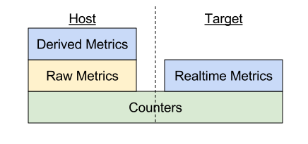

API Concepts
Note: "NvPerf" is the abbreviation for "NVIDIA Perfworks".
The PerfWorks API allows you to instrument an application and collect metrics. Metrics consist of low-level GPU counters, and high-level calculations that take those counters as input. Counters are collected per user-defined-range or per individual workload.
PerfWorks currently supports range-based profiling on a variety of GPUs and APIs.
Realtime is currently supported through range-based profiling.
Isolated vs Pipelined Metrics
Isolated metrics capture the total cost of a range of work, in isolation. To capture isolated results, PerfWorks inserts commands that cause a GPU-wait at each range boundary. PerfWorks will never issue GPU-wait commands inside an isolated range.
Pipelined metrics capture the incremental cost of a range of work. The incremental cost of a range is measured from the moment all preceding work has completed until the end of that range.
Isolated metrics and pipelined metrics are collected on separate passes.
Multi-Pass Collection
NVIDIA GPU hardware has a limited number of counter registers, and cannot collect all possible counters concurrently. There are also limitations on which counters can be collected together in a single pass.
PerfWorks resolves these problems by requiring you to replay the exact same set of GPU workloads multiple times, where each replay is termed a pass. On each pass, PerfWorks collects a different subset of the requested counters. Once all passes have completed, all counter values are made available to read back. This overall process is termed multi-pass collection.
Certain metrics require a large number of counters as inputs; adding a single metric may require a large number of passes to collect. For example, a unit sol metric would require a large number of passes, since it will take inputs from every stage within the unit.
Isolated metrics require one pass per nesting-level of ranges in the program. That is, if your application creates 3-deep nested ranges, each counter must be re-collected 3 times. If the configuration requires 7 passes, then a total of 3*7 = 21 execution passes will be required.
Workflow
The PerfWorks API is split into 3 conceptual phases: configuration, collection, evaluation. These phases define the normal workflow for a host and target.
The following sections contain code recipes that show the prescribed set of calls to accomplish a goal, without intervening error checking. Since each NVPA_ function may fail in real-world usage, working code will be more complex than it appears in the recipes.
Configuration
Configuration is the process of specifying the metrics that will be collected and how those metrics should be collected. The inputs for this stage are the metric names and metric collection properties. The output for this stage is a ConfigImage and a CounterDataPrefix Image.
There are two metric layers: Raw Metrics and Derived Metrics. The Raw Metrics layer contains the list of raw counters supported by the GPU, and can directly configure them. The Derived Metrics layer provides calculated metrics; each metric can report the set of Raw Metric dependencies needed to perform the calculation.
Derived Metrics Layer
From the host PC, you can enumerate metrics with these commands:
RawMetrics Layer
During ConfigImage generation, PerfWorks schedules the specified metrics into passes. See the section on range-based profiling for details on metric configuration modes and behaviors.
During CounterDataPrefix Image generation, PerfWorks determines the counter dependencies for each metric and writes meta data into the prefix image. On the target before collection, the CounterDataPrefix is used to generate a CounterDataImage; the size of the CounterDataImage is a function of the number of ranges you wish to collect.
During collection, PerfWorks uses the ConfigImage to program the GPU at the start of each pass, and writes the results to the corresponding location in the CounterData Image.
A ConfigImage and CounterDataImage are allowed to not match. In simple workflows, both the ConfigImage and the CounterData are created together so that every configured counter is stored. Advanced use-cases include "incremental collection", where a CounterData has space for counters {A, B, C, D}, but collection is split into 2 ConfigImages each containing only {A, B}, {C, D}. The counters can be collected over two separate sessions, and accumulated into a single CounterDataImage.
Configuration can occur offline or online. Configuration can also occur on the host or target device. Keep in mind that if configuration occurs on the target, it will incur some CPU and memory overhead.
Boundary conditions:
- If the ConfigImage contains counters that are missing from the CounterData list, those counters are read from the GPU, but then discarded.
- If the CounterDataImage contains counters that are missing from the ConfigImage list, those counters in the CounterDataImage will remain unmodified during any session that uses the ConfigImage.
- If a CounterDataImage is sized for fewer ranges than executed on the GPU, the results for the last set of ranges will be discarded.
Offline Generation of the ConfigImage using nvperf
nvperf accepts Derived Metric names.
Note: Using nvperf to offline generate the configuration image, a single pass-group is always created.
From the Host PC, run the following commandline tool:
For example, to configure the metrics gpu__shaded_fragments.sum and smsp__pixels_killed_by_shader.sum for gm20b:
Note the above metrics are the "sum" of a counter value. For more detail on the relationship between metrics and counters, please consult the Metrics chapter.
When specifying a metric name on the command line, the following characters can be appended to the end of the name to affect its collection:
- + - set
keepInstancestrue - $ - set
isolatedtrue (Default) - & - set
isolatedfalse (aka. pipelined)
nvperf also accepts "response files" for commandline arguments, which allows passing long lists of metric names via a file. Response files are specified with an '@' symbol. For example:
Online Generation of the ConfigImage
Online generation of the ConfigImage gives you complete control over metric configuration.
Offline Generation of the CounterDataPrefix Image using nvperf
Example:
Note: When configuring for offline evaluation, you must specify keepInstances=true on all metrics by appending a + character.
Online Generation of the CounterDataPrefix Image
Note: When configuring for offline evaluation, you must specify keepInstances=true on all metrics.
Collection on Target
The outline for profiling:
- Allocate buffers for profiling.
- BeginSession with the pre-allocated buffers and ConfigImage. This step initializes hardware.
- For each replay of the frame (until
allPassesSubmitted):- BeginPass : submits commands that apply current pass' configuration to hardware, including the perfmon system.
- Submit GPU work to be profiled, via
nvnQueueSubmitCommands.- Profiled ranges in commandBuffers must be delimited by NVN
Push/PopDebugGroupor PerfWorksPush/PopRangecalls.
- Profiled ranges in commandBuffers must be delimited by NVN
- EndPass : submits commands that flush the hardware counters and disables the perfmon system.
- DecodeCounters : populates the CounterData Image. Recommended to be called once per EndPass.
- Call
nvnQueueFinish()or replay the frame and callDecodeCounters()untilallPassesDecoded. - At any time, counter and metric values can be queried from the CounterData Image via Metrics APIs. ** caveat: if all passes have not been collected and decoded, counter and metric values will be incomplete, signified by
NaNvalues - EndSession when profiling complete, to free up gpu resources.
- Before calling EndSession, the application must ensure that all previously submitted GPU commands from BeginPass, Push/Pop, or EndPass have completed execution. Calling EndSession before these operations have executed on the GPU will result in undefined behavior. The simplest method is to call
nvnQueueFinish()before EndSession, but it's the application's responsibility to ensure that no deadlock would occur by calling it.
- Before calling EndSession, the application must ensure that all previously submitted GPU commands from BeginPass, Push/Pop, or EndPass have completed execution. Calling EndSession before these operations have executed on the GPU will result in undefined behavior. The simplest method is to call
Allocating the Full CounterData Image
A CounterData image allocates space for values for each counter for each range. The CounterDataPrefix only contains some meta data about the metrics that will be stored. A full CounterDataImage with space allocated for the values still needs to be created before a profiling session can begin. Note that a CounterData image only stores counter values for a single iteration . Following the collection of an iteration , the CounterDataImage may be used for metric evaluation. In realtime profiling or on target metric evaluation, the CounterDataImage can be reused once the metrics have been evaluated. If multiple CounterData's are needed, a single CounterDataPrefix can be used to initialize all of them.
Typically, a realtime HUD needs to show fresh values on every frame. In such a case, before reusing a CounterData image over multiple frames, the image should be re-initialized by making a call to NVPA_NVNC_InitializeCounterDataImage. This ensures that the data is cleared for the next iteration . If the image is reused without clearing the data, the next iteration will accumulate into the previous iteration . Reuse without re-initialization could be intended usage if you want to average results over many iterations.
Allocating the CounterData Scratch Buffer
PerfWorks does not allocate any internal buffers itself; this is left to the application. For some internal operations on the CounterDataImage, PerfWorks requires some temporary storage. This is what the CounterData scratch buffer is for.
BeginSession
The call to NVPA_NVNC_BeginSession sets the gpu up for collection, though collection won't begin until NVPA_NVNC_BeginPass. To call BeginSession, GPU-mapped buffers must be allocated and passed to BeginSession via NVPA_NVNC_SessionOptions. Perfworks requires the following buffers to be allocated by the client:
TraceArena - a set of TraceBuffers
The TraceBuffer is used to store range metadata from the GPU, and can be sized with the following:
// If using a PushRangeDynamic for your range markers, the range descriptions must be stored after each corresponding record // This provides storage for the dynamic strings in the buffer // If only using PushRangeStatic, this can be set to 0 const size_t avgDynamicStringLength = 64; // upper bound to the number of ranges in the frame. Each range, including repeated ranges, will create a record in the buffer const size_t maxNumRanges = ...; // NVPA_NVN_TRACE_BUFFER_PAD_SIZE - PerfWorks defined pad size to avoid complicated boundary checks on the gpu // 2x - each range will write a start and end record const size_t traceBufferSize = NVPA_NVN_TRACE_BUFFER_PAD_SIZE + maxNumRanges * (2 * NVPA_NVN_TRACE_RECORD_SIZE + avgDynamicStringLength);
For replay-based profiling, if you insert an
nvnQueueFinishbetween everyEndPassandDecodeCounters, only one TraceBuffer is required.For realtime profiling, like most buffers in graphics applications, the number of required TraceBuffers is a function of the swap-chain size, with additional buffers needed for software-pipelining. On a given frame, buffers typically fulfill the following roles (assuming double-buffering):
- [0] : Submitted commands are enqueuing writes into the current TraceBuffer.
- [-1] : GPU is executing commands to prepare the display's back-buffer, and is actively writing this TraceBuffer. Unsafe to decode from the CPU.
- [-2] : GPU has fully written this TraceBuffer. Corresponds to display's front-buffer. Safe to decode from the CPU.
- [-3] : One additional buffer to avoid a race-condition between reading from the CPU and writes from the current frame's GPU commands.
So the recommended number of buffers in realtime =
swapChainSize + 2.// set to swap chain size + 2; for example with double buffering, set this to 4. const numTraceBuffers = ...; const size_t traceArenaSize = numTraceBuffers * traceBufferSize;
The TraceArena is a single
NVNmemoryPoolwith suggested(NVN_MEMORY_POOL_FLAGS_CPU_UNCACHED_BIT | NVN_MEMORY_POOL_FLAGS_GPU_CACHED_BIT)bits. CPU_CACHED_BIT is acceptable, but PerfWorks will only read from the TraceArena, no writes. The GPU will write to the TraceArena frequently, so GPU_CACHED_BIT is preferred for increased performance.// initialize memory pool with the above given constraints NVNmemoryPool traceArena = ...; sessionOptions.numTraceBuffers = numTraceBuffers; sessionOptions.traceBufferSize = traceBufferSize; // cpu mapped pointer to memory pool sessionOptions.pTraceArena = (uint8_t*)nvnMemoryPoolMap(traceArena); // gpu pointer to memory pool sessionOptions.traceArenaGpuAddress = nvnMemoryPoolGetBufferAddress(traceArena); // pointer to the memory pool object sessionOptions.pTraceArenaMemoryPool = &traceArena;
ComputeArena - a set of ComputeBuffers
The ComputeBuffer is similar to a TraceBuffer but stores metadata about compute traces. It is sized similarly as well:
// upper bound to the number of dispatches in the frame. const size_t maxDispatchesPerFrame = ...; const size_t computeBufferSize = NVPA_NVN_COMPUTE_BUFFER_PAD_SIZE + maxDispatchesPerFrame * NVPA_NVN_COMPUTE_RECORD_SIZE;
The ComputeBuffer is also written by the GPU, so similar to needing multiple TraceBuffers, multiple ComputeBuffers are needed, one per TraceBuffer or the same as the swap chain size.
const size_t computeArenaSize = numTraceBuffers * computeBufferSize;
The ComputeArena is also stored as a single memory pool with similar constraints as the TraceArena so it is suggested to use
(NVN_MEMORY_POOL_FLAGS_CPU_UNCACHED_BIT | NVN_MEMORY_POOL_FLAGS_GPU_CACHED_BIT)bits.sessionOptions.computeBufferSize = computeBufferSize; sessionOptions.pComputeArena = (uint8_t*)nvnMemoryPoolMap(computeArena); sessionOptions.computeArenaGpuAddress = nvnMemoryPoolGetBufferAddress(computeArena); sessionOptions.pComputeArenaMemoryPool = &computeArena;
PerfmonBuffer - a buffer used by the hardware to store intermediate counter results
This buffer is stored in a gpu internal format and is processed by PerfWorks where the results are returned in the CounterDataImage. A Perfmon is short for performance monitor and is the unit that governs the collection of counters per gpu unit. Each perfmon will return two records per range (start and end). The number of perfmons is gpu-dependent. The minimum size for this buffer is:
const size_t maxNumRanges = ... // 100 is a good upper bound for pre-Pascal gpu's // gm20b is always 5 const size_t numPerfmons = 100; const size_t perfmonBufferMinSize = maxNumRanges * numPerfmons * (2 * NVPA_NVN_PERFMON_RECORD_SIZE); // the size must be aligned to NVN_MEMORY_POOL_STORAGE_ALIGNMENT; const size_t perfmonBufferSize = AlignUp(perfmonBufferMinSize, NVN_MEMORY_POOL_STORAGE_ALIGNMENT);
For Windows implementations, the PerfmonBuffer is allocated and managed by PerfWorks. On NX, the application must allocate a page-aligned CPU buffer.
uint8_t* pPerfmonBuffer = nullptr; #if !defined(_WIN32) uint8_t perfmonBuffer[perfmonBufferSize] __attribute__((aligned(NVN_MEMORY_POOL_STORAGE_ALIGNMENT))); pPerfmonBuffer = &perfmonBuffer[0]; #endif sessionOptions.pPerfmonBuffer = pPerfmonBuffer; sessionOptions.perfmonBufferSize = perfmonBufferSize;For edge cases where the calculated buffer sizes are insufficient, please consult the section on dynamic resizing.
Other options to set:
Range Profiling Example
Realtime Profiling Example
Note, that allPassesSubmitted will flip true whenever an iteration is completely submitted. You would still have to wait swap chain size number of frames before the frames for the iteration have been rendered and decoded into the CounterData image. DecodeCounters() does not need to be deferred based on the swap chain size. DecodeCounters() can be called safely after every call to EndPass(). The first calls to DecodeCounters() will simply be no-op's until the first frame's data is written into the trace buffer. Use the DecodeCounterStats output parameter of DecodeCounters() to determine if a pass has been decoded and whether all passes have been decoded.
DebugStats
The DecodeCounters function reads data from the oldest TraceBuffer, reads counters from PerfmonBuffer, and outputs counter values to the passed-in CounterDataImage.
The PerfmonBuffer is a circular buffer managed by the hardware, and is not inherently segmented per TraceBuffer. The circular buffer state-machine is managed inside the PerfWorks library, which can be queried via NVPA_NVNC_QueueGetDebugStats. After a call to DecodeCounters, some perfmon bytes will be consumed (read by the CPU). However, the hardware circular buffer will not be able to reuse that space until the following BeginPass call.
After a completed pass, the TraceBuffer will be populated by the GPU, and NVPA_NVNC_GetTraceBufferDebugStats can be called to read back which pass was collected, and the perfmon buffer end offset for that pass.
Metric Evaluation
Metric Evaluation is the process of forming metrics from the counters stored in the CounterData image. PerfWorks defines several kinds of metrics:
- Raw Metrics - these are simple metrics transformed directly from the CounterData in a canonical format
- Realtime Metrics - these are Raw Metrics that can be collected in a single pass, suitable for realtime profiling. Only GPU values are exposed.
- Derived Metrics - these are complex metrics formed from expressions of Raw Metrics. Both GPU and instance values are available.

Realtime Metrics
The Realtime Metrics System is designed to run on the NX device, and supports both configuration and evaluation. The sample debuggroup.cpp demonstrates both configuration and evaluation on device.
Major differences compared to the Derived Metrics Layer include:
- Realtime metrics only calculates GPU-level values.
- Realtime metrics only return
sumandavgstats;minandmaxare not available. - Realtime metrics provide
per_cycle_elapsedandpct_of_peak_sustained_elapsed. All otherper_cycleandpct_of_peakmetrics are not available. - Realtime throughput metrics are only an approximation of the full formulas defined in the Derived Metrics Layer.
Despite these limitations, the Realtime Metrics System is still handy for quick performance triage on device, and is well suited for integration into performance HUDs.
Configuration + Evaluation Workflow
This is a rough outline of the debuggroup.cpp sample:
- Define the
MetricsStorageobject. This contains enough space for every counter in a single range.nv::metrics::MetricsStorage<nv::metrics::gm20b::AllMetrics, nv::metrics::gm204::AllMetrics> metricsStorage[2];
InitializeChipDesc()initializes thenv::metrics::ChipDescfor the current GPU.- This step initializes the two
RawMetricsContextobjects in theMetricsStorage, one for isolated counters, the other for pipelined. pRawMetricsContextpoints at eithergm20b::AllMetricsorgm204::AllMetrics. The GPU-specific classes contain the GPU-specific evaluation functions for every counter and metric.
- This step initializes the two
SelectAllMetrics()selects counters to be measured.- Enumerate by iterating the array of
MetricDescpointers in(ChipDesc::pMetricDescs, ChipDesc::numMetricDescs). - Keep a list of selected metrics, by holding the
MetricDescpointers. - Note that
debuggroup.cppcollects every possible metric. In your engine, this function is a good place to select the exact list you wish to see.
- Enumerate by iterating the array of
- Configuration
- Call
ChipDescResetContexts()to reset theRawMetricsContextsobjects. Enable configuration mode withchipDesc.pRawMetricsContexts[isolated]->configuring = true; - For each selected metric, call its evaluation function:
pMetricDesc->metricEvalFn(chipDesc.pRawMetricsContexts[isolated]);. As a side effect, all raw metrics required for configuration will have their correspondingRawMetricsContext::pCounts[rawMetricIdx]set to 1. - Iterate over every RawMetricId; if its
RawMetricsContext::pCounts[rawMetricIdx] != 0then convert the 64-bit ID to a string by callingNVPA_RawMetricsConfig_GetMetricNameFromCounterId, then create anNVPA_RawMetricRequestfrom it. - Create a ConfigImage as described in section "Online Generation of the ConfigImage".
- Call
- Collect counter values as described in section "Collection on Target", resulting in a CounterDataImage.
- Evaluate metrics.
- Query number of ranges from CounterDataImage
- Query the range descriptions from CounterDataImage
- Note: range descriptions are returned via
const char*, and point directly into the CounterDataImage.
- Note: range descriptions are returned via
- Call
ChipDescResetContexts()to reset theRawMetricsContextsobjects. - For each range:
- Call
NVPA_NVNC_CounterData_UnpackRawMetricsto unpack raw counter values from the CounterDataImage intoRawMetricsContext. - For each selected metric:
- Call
MetricValue metricValue = pMetricDesc->metricEvalFn(chipDesc.pRawMetricsContexts[isolated]);
- Call
- Call
struct MetricValue
Each metric value has the following properties:
.sum: The sum of counter values across all unit instances.- Sum is usually best for operation counts like: draws, dispatches, primitives, vertices, attributes, pixels, samples, quads.
.avg: The average counter value across all unit instances.- Avg is usually best for cycle counts like: active, stalled.
.peak_sustained: The peak sustained rate of operation for a single instance (i.e. referenced to theavgcounter).- Example:
smsp__inst_issued– each SMSP can issue1.5instructions/gpc_clk sustained, and there are 8 SMSP on a GM20B. The peak_sustained value is1.5.
- Example:
.cycles_elapsed: The avg elapsed cycles on the unit.- On NX, there is only one global clock. Therefore all counters'
cycles_elapsedvalues should be roughly equal.
- On NX, there is only one global clock. Therefore all counters'
.sum_per_cycle_elapsed():sum / cycles_elapsed- Returns per-cycle throughput of the whole GPU.
.avg_per_cycle_elapsed():avg / cycles_elapsed- Returns per-cycle throughput of the average unit instance.
.pct_of_peak_sustained_elapsed():100.0 * avg / (cycles_elapsed * peak_sustained)- Returns the percentage of peak throughput achieved for this counter.
- These values are useful for displaying in a performance HUD.
Percentage Metrics
Some metrics are presented as percentages and have a _pct suffix, for example l1tex__t_sectors_hit_rate_pct.
- The percentage value appears in the
.avgfield. cycles_elapsed,sum_per_cycle_elapsed,avg_per_cycle_elapsed, andpct_of_peak_sustained_elapsedare meaningless on percentage metrics, and can be safely ignored.
Derived Metric Evaluation
The general process is:
0. During collection, save the CounterDataImage to a file. (or transfer over network)
- Query number of ranges from CounterDataImage
- Query the range descriptions from CounterDataImage Note: range descriptions are returned via
const char*, and point directly into the CounterDataImage. - Create an
NVPA_MetricsContextfor the GPU that the CounterDataImage was collected from. - For Each Range:
- Call
NVPA_MetricsContext_SetCounterDatato set the current set of values. - Call
NVPA_MetricsContext_EvaluateToGpuValuesto calculate and retrieve GPU-level values. - Call
NVPA_MetricsContext_EvaluateToInstanceValuesto calculate and retrieve unit-level values.
- Call
NOTE: It is recommended that when using Derived Metric Evaluation, that during the configuration phase, keepInstances should be set to true. Many metrics in the derived metrics layer require instances to evaluate properly. Without keepInstances=true, these metrics will evaluate to NaN.
Please consult the "derivedMetrics" sample for a full demonstration of usage.
Range-Based Profiling
Each profiling session runs a series of replay passes, where each pass contains a sequence of ranges. Every metric enabled in the session's configuration is collected separately per unique range-stack in the pass.
During decode counters, any remaining unmatched PushDebugGroup* ranges are automatically popped.
Detailed Pseudo-code
In this pseudo-code, each range contains more than one draw call, to emphasize that with application-defined ranges, measurements occur at range boundaries (not per draw call).
- The following are not measured, since they lie outside of any range:
Draw_AA_*,Draw_CC_*,Draw_GG_*
- When collecting isolated metrics, data is produced per range-stack as follows:
{100}: isolated cost ofDraw_BB_*{200}: isolated cost of running these in parallel:Draw_DD_*,Draw_EE_*,Draw_FF_*{200, 10}: isolated cost ofDraw_EE_*
- When collecting pipelined metrics, data is produced per range-stack as follows:
{100}: incremental cost ofDraw_BB_*{200}: incremental cost ofDraw_DD_*+ incremental cost ofDraw_FF_*{200, 10}: incremental cost ofDraw_EE_*
Notice that the isolated counters in {200} include contributions from Draw_EE_*, whereas pipelined counters in {200} do not. This result arrives from the definition of isolated metrics, which measure total cost in isolation, as opposed to pipelined metrics which measure incremental cost over previous work.
Isolated vs Pipelined Passes
The following diagrams illustrate how PerfWorks collects metrics differently in pipelined and isolated passes. Each diagram element is also annotated in the source code, so you can search for P1, RA, D3, etc. By way of example, the diagram elements are:
P1and/P1:BeginPassandEndPass, for pass1Cfg P1: configuration of performance counters for pass1RAand/RA:- CPU: ‘PushRange('A’)
and the correspondingPopRange` - GPU: trigger commands
- CPU: ‘PushRange('A’)
D3: Draw Call3VA1: the value for rangeAin pass1W: GPU-wait command, which blocks the GPU frontend from issuing commands until all preceding work has completed
In both pass types:
- Assume frame rendering is double-buffered.
- The GPU executes asynchronously from the CPU – the GPU is behind by one frame.
- Values are delayed by two frame boundaries from the time of the Draw API call.
During pipelined passes (diagram below):
- Execution behavior and performance is the same as when PerfWorks is not in use.
{D1, D2, D3}all execute in parallel.VB1isRB's incremental cost.- Notice that the timespan between
VA1andVB1does not contain the entirety ofD3.
- Notice that the timespan between
During isolated passes (diagram below):
{D1, D2}execute in parallel, since they lie within the same range.D3does not execute in parallel with{D1, D2}.VB1isRB's isolated cost.- Notice that the timespan for VB1 only contains draws within
RB.
- Notice that the timespan for VB1 only contains draws within
NVN
Global Initialization
The following PerfWorks functions must be called before the first call into the OpenGL driver:
Queue Usage
CommandBuffer Ranges
Queue & CommandBuffer Range Interaction
NVNqueues under PerfWorks contain an actual range-stack. NVNcommandBuffers under PerfWorks only contain deferred Push and Pop commands, which are executed on a queue during nvnQueueSubmitCommands. This means you can write NVNcommandBuffers containing only Push operations, only Pop operations, or imbalanced combinations.
This feature is useful when creating new ranges on state-changes. For example, if you want a range per program-bind, you can replace each call to nvnCommandBufferBindProgram with:
Then replace your main render function (RenderFrame) with:
Vulkan Profiling
The Vulkan profiling workflow matches the NVN Workflow and NVN Range-Based Profiling. The sample NvPerfVkSimple.cpp demonstrates all the steps of a profiling session on a VkQueue.
Outline of a profiling session:
Differences from NVN
- BeginPass and EndPass operate on VkCommandBuffer, whereas the NVN equivalents operate on NVNqueue. This provides flexibility, but requires you to carefully sequence the calls per frame.
- Range delimiters (PushRange and PopRange) are only available on VkCommandBuffer. There are no convenience functions at the VkQueue level.
- Performance: each Vulkan PushRange and PopRange command requires some CPU processing at
vkQueueSubmit, even when inert or outside of a profiling session. Avoid inserting many of these in performance-critical environments, like realtime HUD counter collection. - Error reporting: errors detected while processing CommandBuffer commands at
vkQueueSubmit-time must be queried from a subsequent call toVK_Profiler_Queue_GetLastError_Core.- The recommended pattern is to call GetLastError once per frame, to detect any error that previously occurred.
Limitations
- Only one VkQueue may be profiled at a time, on the system.
- BeginPass, EndPass, PushRange, and PopRange must not be recorded into a VkCommandBuffer where the VK_COMMAND_BUFFER_USAGE_SIMULTANEOUS_USE_BIT was set at
vkBeginCommandBuffer.- BeginPass, EndPass, PushRange, and PopRange can be recorded into VkCommandBuffers where flags = 0. The usual CommandBuffer lifecycle rules apply (only one submission in flight at a time).
- Range delimiters -
NVPW_VK_Profiler_CommandBuffer_PushRangeandNVPW_VK_Profiler_CommandBuffer_PopRange- cannot be inserted into Secondary Command Buffers.- To measure all workloads within a secondary command buffer, record into a primary command buffer in the pattern
PushRange, vkCmdExecuteCommands, PopRange. - Measurements of individual workloads within a Secondary Command Buffer would require recording into a primary Command Buffer instead.
- To measure all workloads within a secondary command buffer, record into a primary command buffer in the pattern
- Vulkan Debug Marker extension functions are not automatically treated as range delimiters.
- The recommended approach is to search for
vkCmdDebugMarkerBeginEXTandvkCmdDebugMarkerEndEXT, and nest the equivalentNVPW_VK_Profiler_CommandBuffer_PushRange/NVPW_VK_Profiler_CommandBuffer_PopRangecommands within them.
- The recommended approach is to search for
- Error recovery is similar to NVN.
- Errors are not recoverable within a session. After an error occurs, CounterData contents are not lost, but additional values will not be collected and stored.
- Error recovery requires creating a new session. EndSession must be called to terminate the current session [that is in an error state], before calling BeginSession to start again.
Metrics
Metrics are high-level values derived from counter values.
The PerfWorks API comes with an advanced metrics calculation system, designed to help you determine what happened (counters & metrics), and how close the program reached to peak GPU performance (throughputs).
Every counter has associated peak rates in the database, to allow computing its throughput as a percentage.
Two types of peak rates are available for every counter: burst and sustained. Burst rate is the maximum rate achievable in a single clock cycle. Sustained rate is the maximum rate achievable over an infinitely long measurement period, for "typical" operations. For many counters, burst == sustained. Since the burst rate cannot be exceeded, percentages against burst rate will always be less than 100%. Percentages against sustained rate can occasionally exceed 100% in edge cases.
Metric Entities
The Metrics layer has 3 major types of entities:
- Metrics : these are calculated quantities, with the following static properties:
- Description string.
- Dimensional Units : a list of ('name', exponent) in the style of dimensional analysis. Example string representation:
pixels / gpc_clk. - Raw Metric dependencies : the list of raw metrics that must be collected, in order to evaluate the metric.
- Every metric has the following sub-metrics built in.
.peak_burst: the peak burst rate.peak_sustained: the peak sustained rate.per_active_cycle: the number of operations per unit active cycle.per_elapsed_cycle: the number of operations per unit elapsed cycle.per_region_cycle: the number of operations per user-specified "range" cycle.per_frame_cycle: the number of operations per user-specified "frame" cycle.pct_of_peak_burst_active: % of peak burst rate achieved during unit active cycles.pct_of_peak_burst_elapsed: % of peak burst rate achieved during unit elapsed cycles.pct_of_peak_burst_region: % of peak burst rate achieved over a user-specified "range" time.pct_of_peak_burst_frame: % of peak burst rate achieved over a user-specified "frame" time.pct_of_peak_sustained_active: % of peak sustained rate achieved during unit active cycles.pct_of_peak_sustained_elapsed: % of peak sustained rate achieved during unit elapsed cycles.pct_of_peak_sustained_region: % of peak sustained rate achieved over a user-specified "range" time.pct_of_peak_sustained_frame: % of peak sustained rate achieved over a user-specified "frame" time
- Counters : may be either a raw counter from the GPU, or a calculated counter value. Every counter has 4 sub-metrics under it:
.sum: The sum of counter values across all unit instances..avg: The average counter value across all unit instances..min: The minimum counter value across all unit instances..max: The maximum counter value across all unit instances.
- Throughputs : a family of percentage metrics that indicate how close a portion of the GPU reached to peak rate. Every throughput has the following sub-metrics:
.pct_of_peak_burst_active: % of peak burst rate achieved during unit active cycles.pct_of_peak_burst_elapsed: % of peak burst rate achieved during unit elapsed cycles.pct_of_peak_burst_region: % of peak burst rate achieved over a user-specified "range" time.pct_of_peak_burst_frame: % of peak burst rate achieved over a user-specified "frame" time.pct_of_peak_sustained_active: % of peak sustained rate achieved during unit active cycles.pct_of_peak_sustained_elapsed: % of peak sustained rate achieved during unit elapsed cycles.pct_of_peak_sustained_region: % of peak sustained rate achieved over a user-specified "range" time.pct_of_peak_sustained_frame: % of peak sustained rate achieved over a user-specified "frame" time
At the configuration step, you must specify metric names. Counters and throughputs are not directly schedulable.
The sum,avg,min,max sub-metrics for counters are also called "rollups".
Examples:
Metric Naming Conventions
Counters and metrics generally obey the naming scheme:
- Unit-Level Counter:
unit__<subunit>_<pipestage>_quantity_<qualifiers> - Interface Counter:
unit__<subunit>_<interface>_<pipestage>_quantity_<qualifiers> - Unit Metric:
<counter_name>.<rollup_metric> - Sub-Metric:
<counter_name>.<rollup_metric>.<submetric>
where
- unit: A logical of physical unit of the GPU. See the section on Hardware Units.
- subunit: The subunit within the unit where the counter was measured. Sometimes this is a pipeline mode instead.
- pipestage: The pipeline stage within the subunit where the counter was measured.
- quantity: What is being measured. Generally matches the "dimensional units".
- qualifiers: Any additional predicates or filters applied to the counter. Often, an unqualified counter can be broken down into several qualified sub-components.
- interface: Of the form
<unitA>2<unitB>, whereunitAis the source-unit (sender) andunitBis the destination-unit (receiver). - rollup_metric: One of sum,avg,min,max.
- submetric: see section Metric Entities for the full list.
Components are not always present. Most top-level counters have no qualifiers. Subunit and pipestage may be absent where irrelevant, or there may be many subunit specifiers for detailed counters.
Examples:
Cycle Metrics
Metrics using the term cycles in the name report the number of cycles in the unit's clock domain. Unit-level cycle metrics include:
unit__cycles_elapsed: The number of cycles within a range. The cycles'DimUnitsare specific to the unit's clock domain.unit__cycles_active: The number of cycles where the unit was processing data.unit__cycles_stalled: The number of cycles where the unit was unable to process new data because its output interface was blocked.unit__cycles_busy: The number of cycles where the unit was not idle.unit__cycles_idle: The number of cycles where the unit was idle.
Interface-level cycle metrics are often (not always) available in the following variations:
unit__<interface>_active: Cycles where data was transferred from source-unit to destination-unit.unit__<interface>_stalled: Cycles where the source-unit had data, but the destination-unit was unable to accept data.unit__<interface>_backpressured: Cycles where the destination-unit was unable to accept data. Includes bothstalledcycles, and cycles where the source-unit had no data available.unit__<interface>_busy: All non-idle cycles; equivalent to the sum ofactiveandbackpressuredcycles.
Time Metrics
gpu__time_start: gpu timestamp in nanoseconds, relative to the start of the pass, when the range is first submitted to the gpugpu__time_end: gpu timestamp in nanoseconds, relative to the start of the pass, when the last submittal of the range finishes gpu processinggpu__time_duration: total gpu time in nanoseconds, in pipelined mode, this is the incremental time duration. See "Isolated vs Pipelined Passes" above for more info.gpu__time_active: total gpu time in nanoseconds, in pipelined mode, this is the total range duration. This is equivalent togpu__time_durationin isolated mode.
The gpu__time_duration or gpu__time_active is not simply:
gpu__time_end - gpu__time_start
A range id may cover several ranges within a pass, therefore gpu__time_duration and gpu__time_active is the sum of each of the range's durations with the same id.
NOTE: gpu__time_duration nor gpu__time_active does not currently take into account duration not in context due to context switches. This can result in a higher duration than expected.
cpu__time_duration: this is the cpu only duration in nanoseconds for a range. This includes any time spent in the driver handing off the gpu command to the driver.
This time has no correlation to gpu__time_duration due to the asynchronous nature of the gpu.
system__time_duration: this is simplycpu__time_duration+gpu__time_duration
This is not the duration between when the first command is executed on the cpu to the time the last command is finished executing on the gpu.
This diagram demonstrates 2 ranges collected in pipelined mode. Times for range 2 are shown. Since range 2 begins while the first part of range 1 is on the gpu, the gpu__time_duration is the incremental cost of range 2. gpu__time_active is the full time for range 2.
This diagram demonstrates the same 2 ranges collected in isolated mode. Times for range 1 are shown.  For range 1, notice how
For range 1, notice how gpu__time_duration != gpu__time_end - gpu__time_start due to the split range.
Recommended Metrics for Realtime
Familiarity with Realtime Metrics Evaluation is useful for the following section.
These recommendations are provided per scenario, and per Perfmon type (HUB, FBP, GPC, TPC). Counters for each Perfmon type are scheduled independently, and thus form interchangeable groupings. For example, the FBP perfmon can be configured to measure (crop__cycles_active, zrop__cycles_active) or (rdm__cycles_active, lts__cycles_active) without affecting counters measured from {HUB, GPC, TPC}.
Realtime Counter Constraints
"True" realtime observation must occur in a single pass configuration, meaning all counters are collected simultaneously, so that a free-running program (with no replay loops) has all its counters collected. With a single pass configuration, PerfWorks introduces less than 1% overhead on both CPU and GPU.
Selecting counters that fit in a single pass is not always easy due to the following constraints:
- Each hardware unit has a configuration register for selecting signals to observe. Only a small number of signals may be observed at once for a given hardware unit, and these are hard-wired in the GPU.
- There are only 4 Perfmon types on NX (GM20B): HUB, FBP, GPC, TPC. (
NUM_PERFMON_TYPES = 4) - Each Perfmon only has 4 counter registers. (
NUM_COUNTERS_PER_PERFMON = 4) - Some Perfmons must measure 2 instances of a hardware unit, requiring 2x the number of counter registers per Perfmon.
- Examples of 2 instances per Perfmon: CDP, CROP, LTCX, LTS, MCCIF, PIXOUT, SMP, ZROP
- There are 4 SMSP instances per TPC Perfmon, so only one SMSP counter can be measured per pass.
- Some counter definitions are wider or more complex, requiring multiple counter registers.
The absolute maximum number of counters in a single pass is NUM_PERFMON_TYPES * NUM_COUNTERS_PER_PERFMON == 16, but in practice we typically can collect fewer than 16 counters per pass.
Some high-level metrics like cache-hit-rates, input/output ratios, or breakdowns of operations by type, require multiple passes to collect. Observing activity over the full pipeline also requires multiple passes. For these reasons, we sometimes will recommend a two-pass configuration. Counters will be collected across two frames, but typically the rendered content will not change much between adjacent frames, so it's a reasonable compromise. Alternatively, an engine could replay each frame twice, halving the wallclock FPS in exchange for more accurate counters. Note that multi-pass configurations cannot achieve less than 1% overhead; it is closer to ~3% of GPU overhead due to the extra cost of register programming per pass.
Approximate throughput metrics are provided for convenience, but most require more than 2 passes by themselves. Collecting all throughput metrics requires a much larger number of passes than is suitable for realtime observation.
Basic 3D Activity
The following metrics are good for high-level performance triage. You can also detect the presence of compute. Particularly good for shader pipelines containing only {VS, PS} or {VS, FGS, PS}.
General triage method:
- Is
gr__cycles_activelow? If yes, fix that first. - Is
mmu__cycles_activehigh? If yes, there may be pathological memory access patterns. - Is the range 3D or Compute shader dominated? Compare
sm__cycles_active_computeandsm__cycles_active_3d. - If the range is dominated by 3D, look for 3D bottlenecks, starting from the back of the pipe:
crop__cycles_active: CROP blendsm__cycles_active_3d_ps: pixel shadingzrop__cycles_active: depth/stencil testprop__zrop_output_active: depth/stencil samples sent from rasterizer or PS-output to ZROP; includes EarlyZ, LateZ, and ShaderZ modesraster__frstr_output_cycles: rasterizer generates depth samples and fragments for shadingraster__zcull_input_tiles: zcull over coarse raster tilesvpc__cycles_active: primitive assembly including Clip/Cullsm__cycles_active_3d_vtg_only: VTG shading during startup transients when PS hasn't been startedvaf__alpha_cycles_active: vertex buffer fetch, for vertex shaderpda__cycles_active: index buffer fetchscc__cycles_active: draw call shader bindings and uniform buffer updates
Counter descriptions and pass placement:
- HUB (pass #1)
gr__cycles_active: if low, the GPU is under-utilized.pda__cycles_active: measures vertex fetch from index buffer.mmu__cycles_active: if high, memory accesses may be scattered.scc__cycles_active: if high, there may be many state changes (including uniform buffer updates) that limit draw call concurrency.
- FBP (pass #1)
crop__cycles_active: if high, then CROP-bound.zrop__cycles_active: if high, andprop__zrop_output_activeis not high, there may be poor depth compression caused by high overdraw or many small triangles.
- GPC (pass #1)
vpc__cycles_active: if high, Clip/Cull may be the bottleneck.raster__zcull_input_tiles: if high, then may be depth-test bound at ZCULL.raster__frstr_output_cycles: if high, rasterization may be the bottleneck.prop__zrop_output_active: if high, then may be depth-test bound sending samples from PROP to ZROP.
- TPC (pass #1)
vaf__alpha_cycles_active: measures attribute fetch from vertex buffersm__cycles_active: % of time when any shader warp was resident.sm__cycles_active_3d: % of time when any 3D shader warp was resident.sm__cycles_active_3d_ps: % of time when PS warps were resident; expect high.
- Calculated:
sm__cycles_active_compute: % of time compute warps were resident; compute and 3d do not run concurrently on NX.sm__cycles_active_3d_vtg_only; % of time when VTG warps were not running concurrently with PS; expect low.
Alternate 3D Activity
If CROP isn't your bottleneck (e.g. focused on depth-only render passes) then consider using this:
General triage method:
- Is
sm__cycles_activehigh? If yes, then shader bound. (could be ALU or TEX though) - Is
lts__cycles_activehigh? If yes, then memory bound. - Is
l1tex__m_read_request_activehigh? If yes, then memory bound at TEX. - Is
mmu__cycles_activehigh? If yes, there may be pathological memory access patterns. - Look for bottlenecks, starting from the back of the pipe:
sm__cycles_active: assuming shader time dominated by PS, this is the last observable stage in this configurationzrop__cycles_active: depth/stencil testprop__zrop_output_active: depth/stencil samples sent from rasterizer or PS-output to ZROP; includes EarlyZ, LateZ, and ShaderZ modesraster__frstr_output_cycles: rasterizer generates depth samples and fragments for shadingraster__zcull_input_tiles: zcull over coarse raster tilesvpc__cycles_active: primitive assembly including Clip/Cullvaf__alpha_cycles_active: vertex buffer fetch, for vertex shaderpda__cycles_active: index buffer fetchscc__cycles_active: draw call shader bindings and uniform buffer updatesfe__cycles_active: GPU command processing
Counter descriptions and pass placement:
- HUB (pass #1)
fe__cycles_active: if high, FE is either performing large DMA copies, or is processing too many large command buffers.pda__cycles_active: measures vertex fetch from index buffer.mmu__cycles_active: if high, memory accesses may be scattered.scc__cycles_active: if high, there may be many state changes (including uniform buffer updates) that limit draw call concurrency.
- FBP (pass #1)
zrop__cycles_active: if high, andprop__zrop_output_activeis not high, there may be poor depth compression caused by high overdraw or many small triangles.lts__cycles_active: if high, then L2 Cache is a limiter. There's also a chance that DRAM is a limiter; check MCCIF stats in a separate configuration.
- GPC (pass #1)
vpc__cycles_active: if high, Clip/Cull may be the bottleneck.raster__zcull_input_tiles: if high, then may be depth-test bound at ZCULL.raster__frstr_output_cycles: if high, rasterization may be the bottleneck.prop__zrop_output_active: if high, then may be depth-test bound sending samples from PROP to ZROP.
- TPC (pass #1)
vaf__alpha_cycles_active: measures attribute fetch from vertex buffersm__cycles_active: % of time when any shader warp was resident.l1tex__m_read_request_active: % of time when an L1 miss generated an L2 request.
Possible substitutions:
- In place of
l1tex__m_read_request_active:l1tex__texin_sm2tex_active: see Memory section.l1tex__f_output_tex2sm_active: if high, then range is TEX return data bound. Typically a compute-only problem from 64-bit or 128-bit global load instructions.l1tex__d_output_wavefronts: see Memory section.
- In place of
vaf__alpha_cycles_active:pel__out_l2_requests: if high, then attribute transfer is consuming high L2 bandwidth. (ISBEs being written to CBEs at the end of World Alpha and Beta phases)stri__attrs: if high, then preparing PS attributes in TRAM is a bottleneck.
- TPC : detecting killed PS threads (GLSL
discardcommand in fragment shaders)vaf__alpha_cycles_active: measures attribute fetch from vertex buffersm__cycles_active: % of time when any shader warp was resident.sm__ps_quads_launched: # of 2x2 PS quads launched. A launched quad has at least one thread with sample coverage.sm__threads_launched_pscan be evaluated at no extra cost. It =sm__ps_quads_launched * 4.
sm__ps_quads_sent_to_pixout: # of 2x2 PS quads where at least one thread was not killed (discarded) by PS program.sm__ps_quads_sent_to_pixout_pct: % of PS quads surviving the PS program.
Cache Hit Rates
It's possible to get cache hit rates from all major caches in a single pass.
Which allows the following additional metrics to be evaluated at no additional cost:
Counter descriptions and pass placement:
- HUB (pass #1)
mmu__hubtlb_requests_hit_rate_pct: % of PTE requests that hit in HUB TLB (the "L2 TLB").mmu__hubtlb_requests: high # of requests here implies L1TLBs and uTLBs experienced high miss rates.host__pushbuffer_dwords: indicates command memory bandwidth into FE.
- FBP (pass #1)
lts__t_tag_requests_hit_rate_pct: % of L2 tag accesses that hit.- This metric was chosen because it can be collected in a single pass, as opposed to
lts__t_sectors_hit_rate_pct. - Caveat: Not a true indicator of bandwidth since sectors may be sparsely loaded into cache-lines depending on requested addresses. (4 sectors per cache-line, 1 tag per cache-line)
- This metric was chosen because it can be collected in a single pass, as opposed to
- GPC (pass #1)
gcc__l15_requests_hit_rate_pct: % of shader constant and instruction requests that hit in L1.5 cache. Incoming requests include shader I$ misses, IMC misses (non-indexed constant lookup), and IDC misses (indexed constant lookup viaLDCinstruction).gcc__tsl2_requests_hit_rate_pct: % of texture or sampler header requests that hit in TSL2 cache. If low, then shaders may be thrashing over a large number of texture/sampler combos (threshold is ~64-84 on NX).
- TPC (pass #1)
l1tex__t_sectors_hit_rate_pct: % of L1TEX sector accesses that hit.- This includes texture, surface, and global load/store acccesses by shaders.
l1tex__t_sectors_miss: implies the # of 32B sectors requested from L2.- True indicator of L1<->L2 bandwidth.
Possible substitutions:
- In place of
gcc__tsl2_requests_hit_rate_pct:vpc__write_sectors: write bandwidth to CBEs in L2 from VPC.
Additional configurations:
- FBP (pass #2 + pass #3)
lts__t_sectorslts__t_sectors_hit- (calculated)
lts__t_sectors_hit_rate_pct: % of sector requests that hit in L1TEX cache.- Unfortunately cannot be collected in single pass.
(lts__t_sectors - lts__t_sectors_hit)is equivalent tolts__t_sectors_misswhich is a true indicator of bandwidth.
- FBP (pass #4)
crop__read_subpackets: # of 32B L2 sector reads. Unfortunately, cannot gathercrop__write_subpacketsin the same pass.zrop__read_subpackets: # of 32B L2 sector reads. Unfortunately, cannot gatherzrop__write_subpacketsin the same pass.
- FBP (pass #5)
crop__write_subpackets: # of 32B L2 sector writes.zrop__write_subpackets: # of 32B L2 sector writes.
- TPC (pass #2)
l1tex__texin_sm2tex_active: if high, then range is TEX or LG request bound.l1tex__d_output_wavefronts: if high andl1tex__texin_sm2tex_activeis low, then range is TEX filtering bound. Consider reducing the # of aniso or trilinear filtered texture accesses.
GPU DRAM Read/Write
DRAM traffic generated from the GPU cannot be collected in a single pass due to hardware limitations. However, the following two-pass configuration provides a reasonable approximation of bandwidth.
Which allows the following additional metrics to be evaluated at no additional cost:
Counter descriptions and pass placement:
- FBP (pass #1) : read traffic
lts__mccif_read_bytes: # of bytes read from the SoC DRAM controller to the GPU.- Note that in a single pass, it's possible to get all read traffic.
lts__mccif_read_bytescan be combined with any other {HUB, GPC, TPC} counters.
- Note that in a single pass, it's possible to get all read traffic.
- FBP (pass #2) : write traffic
lts__mccif_write_bytes_appx: # of bytes written from the GPU to the SoC DRAM controller.- This counter is approximate because it ignores
lts__mccif_write_cycles_16which counts 16 byte write operations. 16 byte writes are rare because GPU cacheable memory is always read and written by L2 in units of 32 bytes (L2 sectors). Only uncacheable writes should generate 16 byte write operations to the memory controller. - Note that in a single pass, it's possible to get approximate write traffic.
lts__mccif_write_bytes_appxcan be combined with any other {HUB, GPC, TPC} counters.
- This counter is approximate because it ignores
Primitive Flow
- HUB (pass #1)
pda__input_prims: input primitives to draw calls.pdb__input_batches: batches sent from VS or Tesselation.
- GPC (pass #1)
- TPC (pass #1)
vaf__alpha_fetched_attr_scalar: scalar attributes fetched from vertex buffer for VS.sm__cycles_active_3d_vtg: time when VTG warps were resident.
Stalls and Limiters
The following (incomplete) list of counters have not been optimized into single pass configurations, but may be useful for diagnosing stalls in key areas of the pipe.
Advanced Concepts
Pass-Groups
The Configuration section presents simplified recipes for configuring counters, including through nvperf. In the simplified workflow, PerfWorks will decide how to schedule counters into passes. PerfWorks attempts to schedule the maximum number of counters per pass to reduce the number of required replays, but hardware constraints may force the creation of additional passes. There is no guarantee that any given metric will be collected on a particular pass.
In special cases, you may want to schedule two counters in the same pass, to get a precise sum or ratio. For example, sm__cycles_active_3d + sm__cycles_active_compute == sm__cycles_active, but the equality strictly holds only when measured in the same pass. Splitting measurement across passes will result in a less precise value, influenced by work distribution and other non-deterministic processes. It's possible to encourage these two counters into the same pass by creating a new PassGroup at configuration time, via NVPA_RawMetricsConfig_BeginPassGroup. Caveats:
- Over-using PassGroups may result in sub-optimal scheduling, resulting in additional replay passes needed to collect all counters.
- It's possible to scheduled the same counter multiple times in a single Configuration; up to once per PassGroup. This will cause the value to be statistically averaged. If this is not the desired effect, then you must avoid passing the same name into AddCounter on multiple PassGroups.
In practice, PassGroups tend to be interesting only in realtime configurations involving 1-2 passes. For replay-based profiling, statistical sampling is the preferred method for eliminating multi-pass variance.
Statistical Sampling
During DecodeCounters, PerfWorks increments each counter value with logic similar to:
If you collect repeated iterations of the same counter, the sum will accumulate and numSamples will increment. At evaluation time, the metric systems calculate the mean value as sum / numSamples. This allows the values to naturally converge to its statistical average, the longer you sample it.
If there are specific stats you wish to statistically sample, you can create a separate configuration containing only those counters and re-run additional passes on just that configuration.
Dynamically resizing the TraceBuffer and ComputeBuffer
General formulae were provided to accurately size the TraceBuffer and ComputeBuffer. These formulae are based on having a priori knowledge of the number of ranges and number of dispatches being profiled in the application. With larger complex applications with dynamic branching, these might be unknown. So either some upper bound must be chosen potentially waisting gpu memory, or the buffers can be dynamically sized at runtime.
This approach requires starting a session with fewer buffers than necessary, and allow PerfWorks to report how many records in bytes were dropped due to not having enough space. You can then restart the session with the updated buffer sizes. This way, you allow the buffers to grow over several passes. The one downside to this approach is that it could take several iterations of growth before hitting the upper bound.
The dropped byte count is reported during NVPA_NVNC_DecodeCounters through the out parameters of the NVPA_NVNC_DecodeCountersStats object.
Definitions
Glossary
- Counter : the number of occurences of a specific event
- always a "count value" – a non-negative integer value
- if the counter originates from an instanced hardware unit, the term "counter" may imply an array of count values
- Device : a physical NVIDIA GPU
- Graphics API : in this document, any API that sends work to a GPU
- here, the term "graphics API" includes compute-only APIs like CUDA
- Iteration : a set of passes needed to collect a set of metrics.
- Metric : a high-level value derived from counter values
- Pass : a repeatable set of operations, with consistently labeled ranges
- In most graphics programs, a pass equates to a rendered frame.
- Range : a labeled region of execution
- Each Range covers a set of API calls. The label provides a means of attribution.
- Ranges can be nested. Each NVNqueue maintains its own stack of RangeIds as part of its state. The stack is reset to empty at
BeginPass. - Ranges can be pushed/popped on NVNcommandBuffers. These operations will be performed on the NVNqueue when submitted.
- The label is a string.
- Range-Stack : a stack of RangeIds
- Session : a set of passes collecting metrics for a single configuration
- GPU resources needed for profiling are allocated at Session boundaries.
- Power management may be disabled at Session boundaries.
- Outside of a Session, the GPU will return to its normal operating state.
- Trigger : abstractly, a GPU command that causes counters to start or stop incrementing
- e.g., on each measurement Range, PerfWorks inserts a start and stop trigger
- User : you
- Workload : a draw call, compute dispatch, or DMA-copy
- You : the application or engine developer; aka the user
Hardware Units
- CBMGR: The Circular Buffer Manager communicates attributes from Alpha phase to Beta phase, and from Beta phase to Raster.
- CDP: The Color Data Path performs Alpha Test and Alpha-to-Coverage.
- CROP: The Color Raster Operation unit is the portion of the Raster Operation unit that performs blending and color write.
- CRSTR: The Coarse Raster unit determines primitive coverage over 16x16 tiles.
- CSB: The Color Sync Barrier unit is a subunit of PROP, responsible for reordering shaded fragments. The CSB sends color data to CROP.
- CWD: The Compute Work Distributor rasterizes compute dispatches, and distributes compute work to SMs.
- DRAM: The logical unit for the external memory controller. On discrete GPUs, this is called the Frame Buffer (FB); for integrated GPUs, this refers to the SoC memory controller.
- FBP: The Frame Buffer Partition (FBP) includes the L2 cache, CROP, and ZROP unit. On discrete GPUs, the FBP contains the memory controller for the DRAM interface.
- FE: The Front End unit is the portion of HOST that decodes GPU commands and sends them to engines.
- FRSTR: The Fine Raster unit determines which samples of subtile (8x8 or 16x4) are covered by a primitive.
- GCC: The GPC Cache Controller has a "level 1.5" cache to hold instructions and constant data.
- GPC: The Graphics Processor Cluster (GPC) contains most of the graphics and compute processing units. The GPC contains Texture Processor Clusters (TPC) and fixed function graphics units, which perform vertex fetch and processing, primitive processing, rasterization, and communicating with SM and FBP units. Low-end GPUs contain 1 GPC while higher end GPUs contain multiple GPCs.
- GPMPD: The Graphics Program Manager Primitive Distributor sends geometry to MPCs.
- GPMSD: The Graphics Program Manager Screen Distributor sends fragment work to MPCs.
- GPU: GPU is the top level logical unit. Metrics that use counters from multiple units may specify this unit.
- GR: GR is the graphics or compute engine. The HOST schedules work on the graphics and compute engine.
- HOST: The HOST is the interface to the CPU. The HOST fetches GPU commands from memory, and schedules work on the engines.
- L1TEX: The L1 Texture Unit (L1TEX also referred to as TEX) receives coordinates from the SMs, fetches texel data, and performs bilinear/trilinear/aniso filtering. Texture contains an L1 cache to improve locality. On Maxwell and Pascal GPUs, the TEX unit also is responsible for global, local, and surface loads and stores.
- LTC: The L2 Cache unit contains LTS and Raster Operation units (CROP, ZROP, RDM).
- LTCX: On mobile GPUs, each LTS connects to the MCCIF via an LTCX. Contains queueing and coalescing logic.
- LTS: The L2 data cache slice is the basic building block of the L2 data cache.
- MCCIF: On mobile GPUs, the Memory Controller Interface sends read & write requests from LTCX to the MSS.
- MME: The Macro Method Expander is a subunit of FE.
- MPC: The Module Pipe Controller coordinates shader launches and related resource management.
- MSS: On mobile SoCs, the Memory SubSystem contains the DRAM controller. Resides outside of the GPU, and handles CPU traffic as well.
- PDA: Primitive Distributor Alpha sub-unit of PD which assembles primitives from memory buffers and sends them to the GPCs.
- PDB: Primitive Distributor Beta sub-unit of PD which distributes geometry and/or tessellation shading to GPCs.
- PEL: Primitive Engine Local. A per-TPC unit that contains the VAF and STRI units.
- PES: Primitive Engine Shared. A GPC unit shared by TPCs, that contains the VSC and TG units.
- PIXOUT: PIXOUT is an interface that transfers shaded fragment output from SM to the Color Data Path, which eventually leads to CROP.
- PPC: The Primitive Processing Cluster.
- PROP: The Pre-ROP unit does address calculation and sends pixel work to TPCs and ROPs. PROP is responsible for managing EarlyZ and LateZ, and sends depth samples to ZROP for Z-Test. PROP also sends final computed color samples to CROP.
- RASTER: Raster is a pipeline that translates primitives into pixel work. Contains SETUP, CRSTR, ZCULL, FRSTR, TC.
- RDM: The Raster Operation Data Manager resides in the LTC. RDM receives CROP and ZROP commands from GPCs, and distributes them to the appropriate destination.
- SCC: The State Cache Controller handles state and constant versioning for the graphics pipeline.
- SETUP: The Raster Setup unit fetches coordinate attributes from circular buffers, and calculates edge equations for triangles.
- SKED: The SKED unit maintains the list of outstanding compute tasks, and sends them to the Compute Work Distributor.
- SM: The Streaming Multiprocessor (SM) is the core processing unit in the GPU, running all shader programs.
- SMP: The Stream Multiprocessor Partition (SMP) is a physical partition of the shared resources in the SM.
- SMSP: The Streaming Multiprocessor Sub-Partition (SMSP) contains a warp scheduler, register file, and dedicated execution units.
- STREAM: The Stream unit can write primitive data to memory before clip/cull. Stream is known as "transform feedback" on some APIs.
- STRI: The Setup Triangle unit calculates plane equations for attributes for the pixel shader, and sends them to be stored in TRAM.
- SWDX: The Screen Work Distributor Crossbar receives work from the crossbar bus, and sends primitives to rasterizers. SWDX performs the binning and tiling steps for Tiled Caching.
- TC: The Tile Coalescer sits at the end of the Raster pipe.
- TGA: Task Generator Alpha.
- TGB: Topology Generator Beta.
- TPC: The Texture Processor Cluster (TPC) is the core unit of graphics functionality, including graphics and compute shader functions, texture and primitive engine functions, including attribute fetch and plane equation calculations. The TPC includes Streaming Multiprocessors SM, Texture Units L1TEX, and a primitive engine.
- VAF: The Vertex Attribute Fetch unit reads attributes from memory for Vertex Shaders and the Beta phase shaders.
- VPC: The Viewport Clip Cull unit.
- WWDX: The World Work Distributor Crossbar sends primitives at the end of the world pipe to the crossbar bus, destined to SWDX and rasterization.
- ZCULL: The ZCULL unit is a low resolution on-chip Z-buffer to trivially accept or reject tiles based on conservative depth comparison. ZCULL sits in the RASTER pipe.
- ZROP: The Z Raster Operation unit is the portion of the Raster Operation unit that performs the Depth (Z) and Stencil read, compare, and conditional write.
Hardware Unit Tree
Notices
Notice
ALL NVIDIA DESIGN SPECIFICATIONS, REFERENCE BOARDS, FILES, DRAWINGS, DIAGNOSTICS, LISTS, AND OTHER DOCUMENTS (TOGETHER AND SEPARATELY, "MATERIALS") ARE BEING PROVIDED "AS IS." NVIDIA MAKES NO WARRANTIES, EXPRESSED, IMPLIED, STATUTORY, OR OTHERWISE WITH RESPECT TO THE MATERIALS, AND EXPRESSLY DISCLAIMS ALL IMPLIED WARRANTIES OF NONINFRINGEMENT, MERCHANTABILITY, AND FITNESS FOR A PARTICULAR PURPOSE.
Information furnished is believed to be accurate and reliable. However, NVIDIA Corporation assumes no responsibility for the consequences of use of such information or for any infringement of patents or other rights of third parties that may result from its use. No license is granted by implication of otherwise under any patent rights of NVIDIA Corporation. Specifications mentioned in this publication are subject to change without notice. This publication supersedes and replaces all other information previously supplied. NVIDIA Corporation products are not authorized as critical components in life support devices or systems without express written approval of NVIDIA Corporation.
Trademarks
NVIDIA and the NVIDIA logo are trademarks or registered trademarks of NVIDIA Corporation in the U.S. and other countries. Other company and product names may be trademarks of the respective companies with which they are associated.
Copyright
NVIDIA(R) PerfWorks SDK Documentation (c) 2015-2021. NVIDIA Corporation. All Rights Reserved.